Học kì 1, năm học 2026–2027
Viện Trí tuệ nhân tạo, Trường ĐH Công nghệ, ĐHQGHN
seaborn, bản đồ, biểu đồ tương tác và cách thẩm định hình do AI sinh.
Giao diện thống kê cấp cao được xây trên matplotlib.
set_theme: thiết lập phong cách chung
import seaborn as sns
sns.set_theme(style="whitegrid")
sns.boxplot(data=df, x="price", y="room_type")
ax, nên có thể chỉnh tiếp như ở bài 12.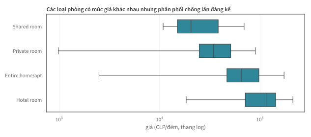
hue: thể hiện nhóm bằng màu
q = ["Santiago",
"Las Condes"]
sns.histplot(
df[df.neighbourhood
.isin(q)],
x="price",
hue="neighbourhood",
log_scale=True,
element="step",
stat="density",
common_norm=False)
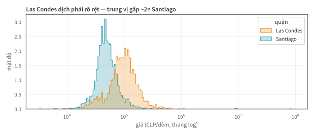
hue= tách nhóm bằng màu ngay trong lệnh vẽ; common_norm=False chuẩn hoá riêng từng nhóm để so hình dạng thay vì quy mô.
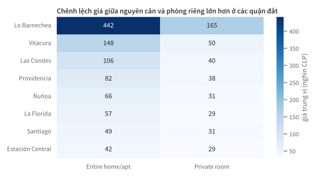
sns.heatmap(annot=True) dùng màu để so sánh nhanh
các ô trong bảng pivot, đồng thời giữ lại giá trị ở từng ô.
# rộng -> dài: mỗi dòng = (quận, loại phòng, giá trung vị)
dai = pivot.reset_index().melt(
id_vars="neighbourhood",
var_name="room_type", value_name="gia")
seaborn thường dùng dữ liệu có mỗi dòng là một quan sát và mỗi cột là một biến (tidy data). melt chuyển bảng pivot từ dạng rộng sang dạng dài.
FacetGrid: lưới nhiều biểu đồ nhỏ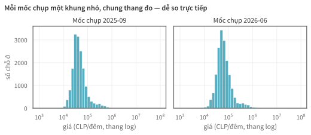
Bổ sung ranh giới quận cho bản đồ điểm ở bài 12.
import geopandas as gpd
geo = gpd.read_file(".../neighbourhoods.geojson") # ranh giới quận
kpi = df.groupby("neighbourhood")["price"].median().reset_index()
ban_do = geo.merge(kpi, on="neighbourhood", how="left")
ban_do.plot(column="price", cmap="Blues", legend=True)
Ba bước: đọc ranh giới → tính chỉ số theo quận → merge rồi
plot(column=...). File GeoJSON có sẵn trong mỗi mốc chụp Inside Airbnb.
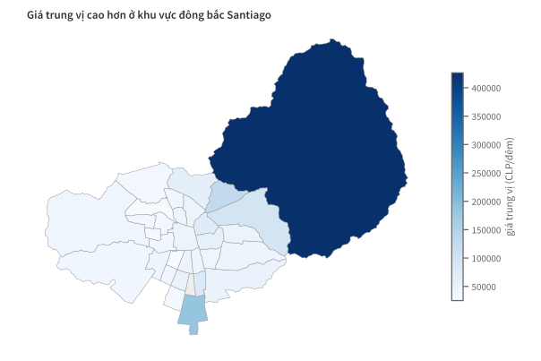
Dùng khi cần khám phá chi tiết của từng điểm dữ liệu.
import plotly.express as px
px.scatter(
s, x="longitude",
y="latitude",
color="room_type",
hover_name="name",
hover_data=["price",
"neighbourhood"])
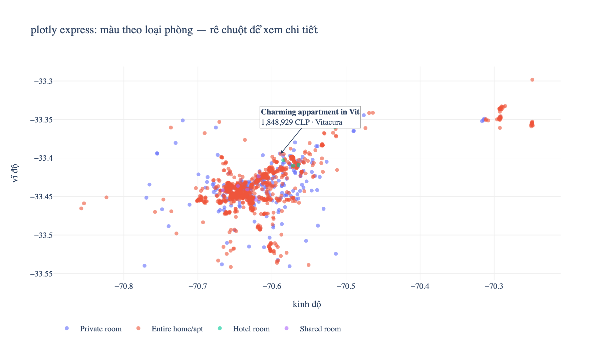
Cú pháp tương tự seaborn; biểu đồ HTML cho phép rê chuột xem tên chỗ ở, giá và quận của từng điểm (ảnh tĩnh minh hoạ nội dung hover).
| Bối cảnh | Lựa chọn |
|---|---|
| Khám phá dữ liệu, minh hoạ trên lớp, dashboard nội bộ | biểu đồ tương tác (plotly; xem chi tiết khi rê chuột) |
| Báo cáo PDF, slide và bản in | biểu đồ tĩnh (matplotlib/seaborn; dùng chú thích thay cho tương tác) |
AI có thể tạo biểu đồ nhanh nhưng không bảo đảm cách trình bày đúng. Ba ví dụ sau minh hoạ những lỗi thường gặp.
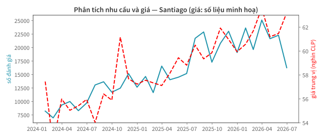
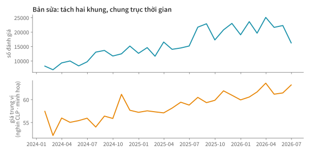
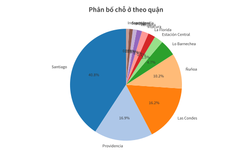
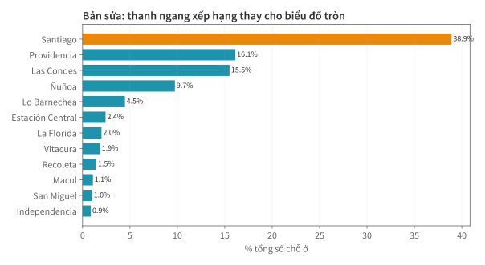
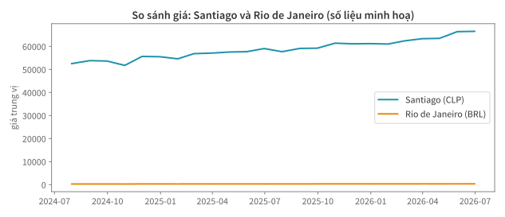
CLP và BRL không thể so trực tiếp. Quy hai chuỗi về chỉ số với tháng đầu = 100 để so nhịp thay đổi:
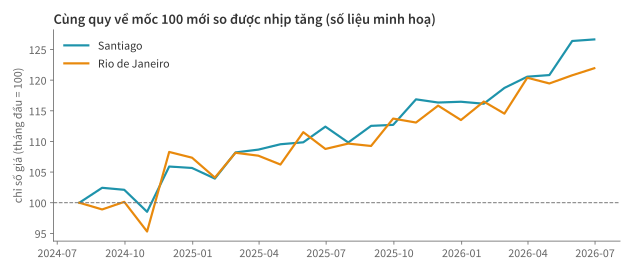